Maps
Most Recent Maps
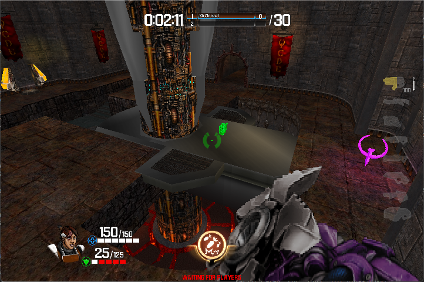
QCDL13 - The Proving Grounds
The Proving Grounds is a Quake3 remake map I made for QCDE a couple of years ago. To play the map you must have QCDE installed. Just load the mod and browse for QCDL13 in the Duel section of the map list in QCDE. If you don't have QCDE, it can be downloaded here:
Download QCDE
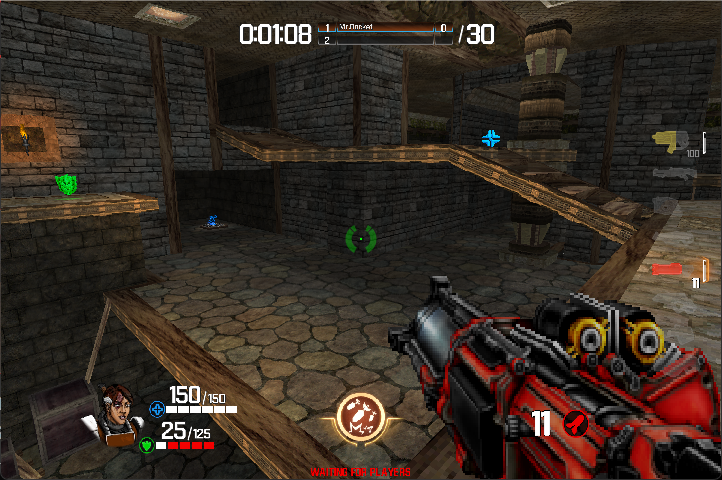
QCDE23 - Lea
Lea is a map remake of an Unreal 2 Tournament map I made for QCDE about a year or so ago? To play the map you must have QCDE installed. Just load the mod and browse for QCDE23 in the General section of the map list in QCDE. If you don't have QCDE, it can be downloaded here:
Download QCDE
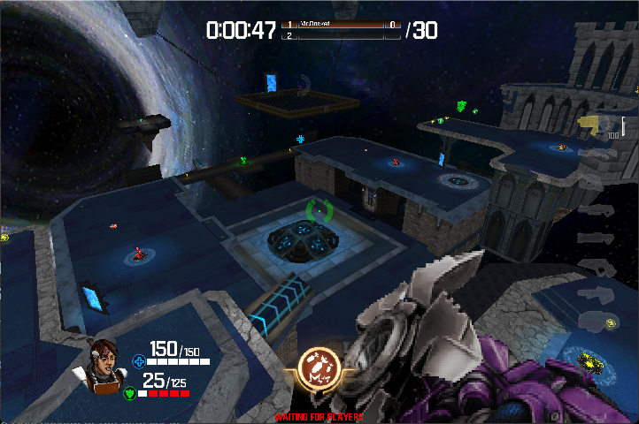
QCME01 - The Longest Yard
The Longest Yard is a remake map of the original Quake Champions map for QCDE I made a few years ago, which in retrospect was also based on the original Q3 map with the same name. To play the map you must have QCDE installed. Just load the mod and browse for QCME01 in the Meme section of the map list in QCDE. If you don't have QCDE, it can be downloaded here:
Download QCDE
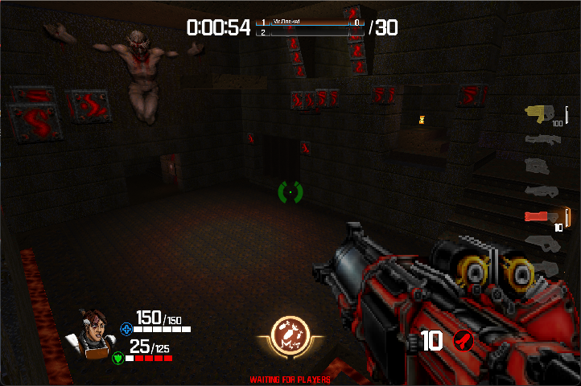
QCDE47 - Claustrophobopolis
Claustrophobopolis is a remake map of the original Quake map for QCDE I made some years ago now. To play the map you must have QCDE installed. Just load the mod and browse for QCDE47 in the General section of the map list in QCDE. If you don't have QCDE, it can be downloaded here:
Download QCDE
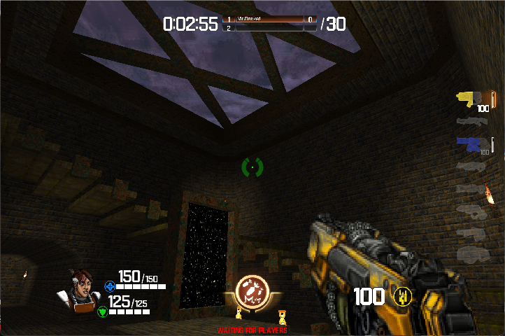
QCDL07 - The Dark Zone
The Dark Zone is a remake map of the original Quake map for QCDE I made more than a few years ago. To play the map you must have QCDE installed. Just load the mod and browse for QCDL07 in the Duel section of the map list in QCDE. If you don't have QCDE, it can be downloaded here:
Download QCDE
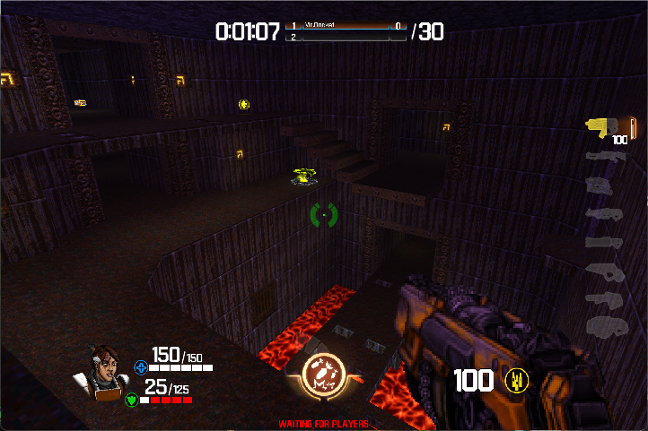
QCDL01 - The Bad Place
The Bad Place is a remake map of the original Quake map for QCDE I made several years ago. To play the map you must have QCDE installed. Just load the mod and browse for QCDL01 in the Duel section of the map list in QCDE. If you don't have QCDE, it can be downloaded here:
Download QCDE
Older Stuff
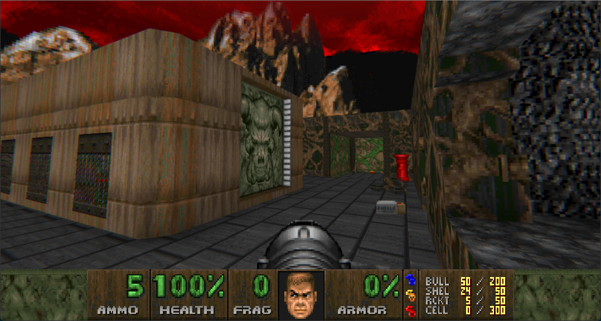
DaJaVu
DaJaVu is the 1st Deathmatch level for Ultimate Doom I built for the community-driven megawad called Ultimate TWANGO. Compiled by OpenRift in 2021, the megawad is comprised of all 4 episodes and 9 levels per episode, replacing all levels in Ultimate Doom with DM maps. DaJaVu replaces E2M3. The reason I decided to call it DaJaVu is because it looks ridiculously similar to the original Ultimate Doom level that it replaces.
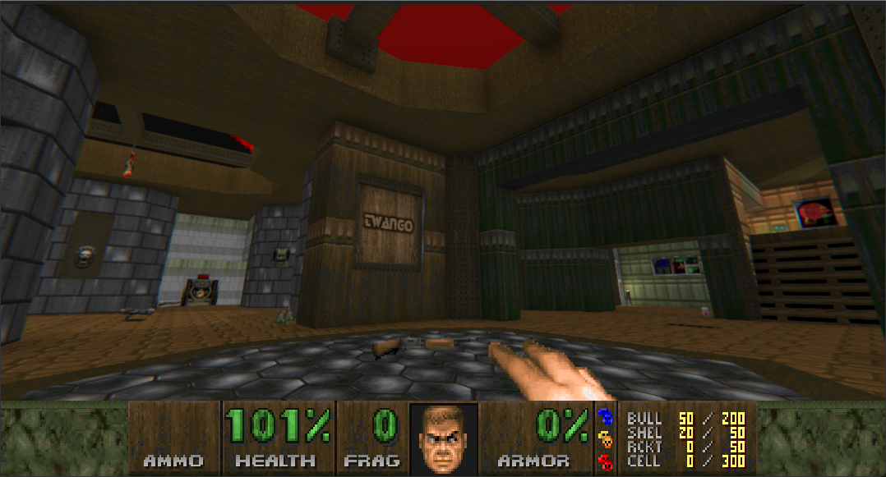
O' Damn
O' Damn is the 2nd Deathmatch level for Ultimate Doom I built for the same community-driven megawad, Ultimate TWANGO. Compiled by OpenRift in 2021, the megawad is comprised of all 4 episodes and 9 levels per episode, replacing all levels in Ultimate Doom with DM maps. O' Damn replaces E2M6. I took the liberty of uploading the megawad here.
Download UTWANGO.WAD
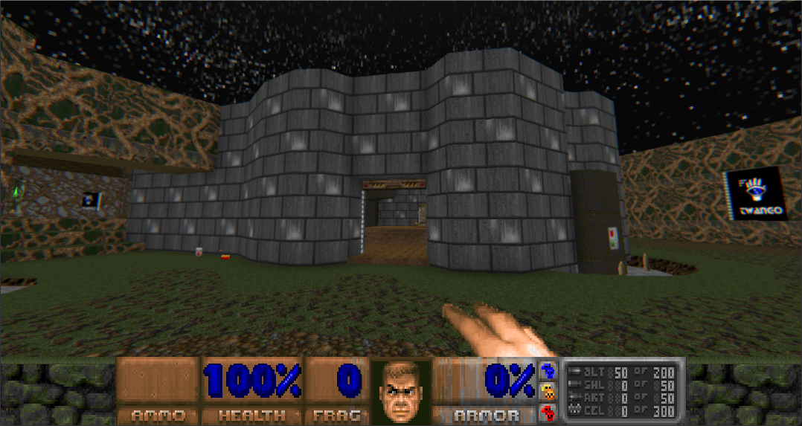
MRTWANGO
MRTWANGO is a Doom2 DM level I made for the community-driven megawad called TWANGO1, which was compiled by OpenRift in 2021. MRTWANGO is a 2-4 player level and replaces MAP02 of Doom2.
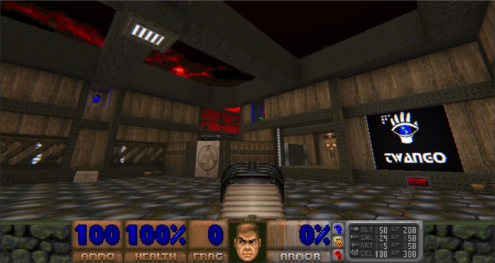
MRCRUNCHY
MRCRUNCHY is another Doom2 DM level I made for the community-driven megawad called TWANGO1, which was compiled by OpenRift in 2021. MRCRUNCHY is also a 2-4 player level and replaces MAP22 of Doom2. I took the liberty of uploading the TWANGO1 megawad here.
Download TWANGO1.WAD
Even Older Stuff
Doom Legacy Maps
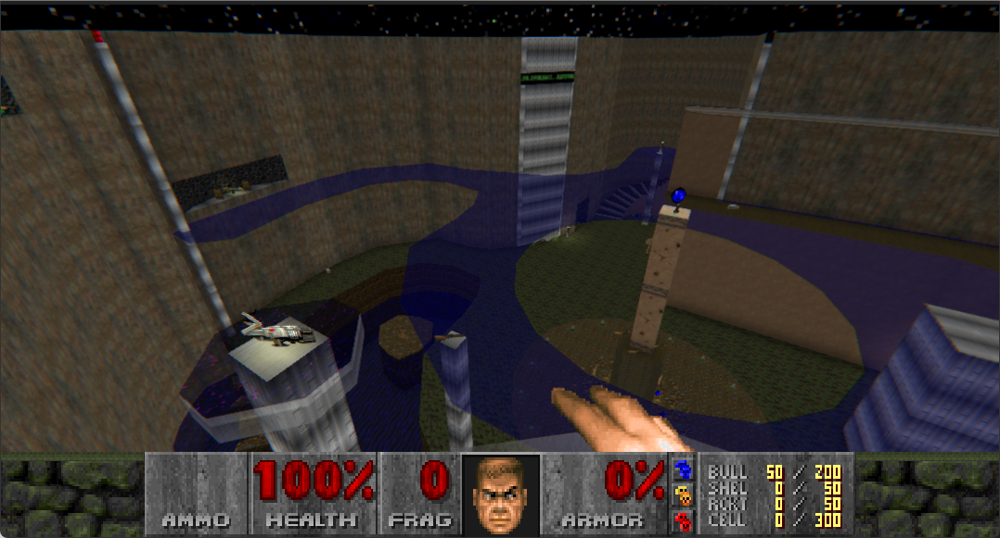
MRPD3D.wad
Plexeydome 3D is a single 1-5 player "3D FLOORS" map for DM or co-op play (preferably DM), USING THE LATEST VERSION OF DOOM2.WAD and DOOMLEGACY with SOFTWARE, 3DFX or GL modes.. heh, I made this back in 2001 and it should run fine on other source ports that support 3D floors in OpenGL modes.
Download MRPD3D.wad
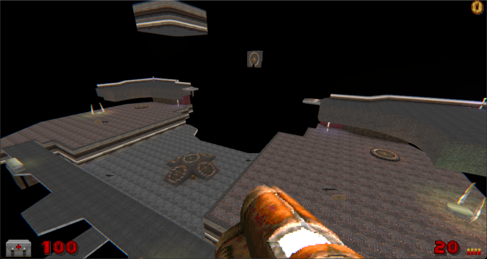
MRQ3DM17.wad
MRQ3DM17.wad is a single level remake of the Quake3 DM level titled "The Longest Yard" for Doom Legacy. I made this level back in 2003 and it was probably one of the first real Q3 remakes for a Doom sourceport that had functional jump pads. Uses Dehacked to simulate the rail gun. The level may not run correctly on newer builds of Doom Legacy, however it is kept here for historical reasons.
Download MRQ3DM17.wad
Old School Megawads
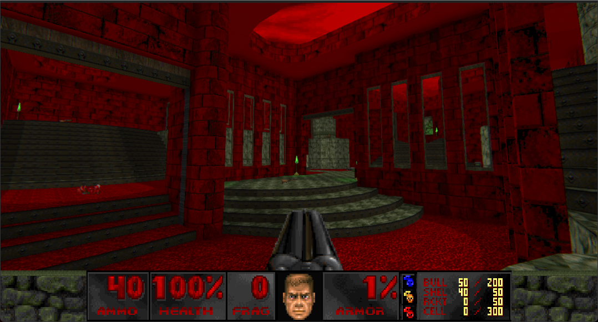
Mega5.wad
Mega5 is an Old Skool style Deathmatch megawad made for the Doom II game, and just about any Doom source engine. Includes 22 deathmatch maps! I compiled Mega5 back in 2011. All levels are new from the Doom community, 10 of which I made as well.
Download mega5.wad
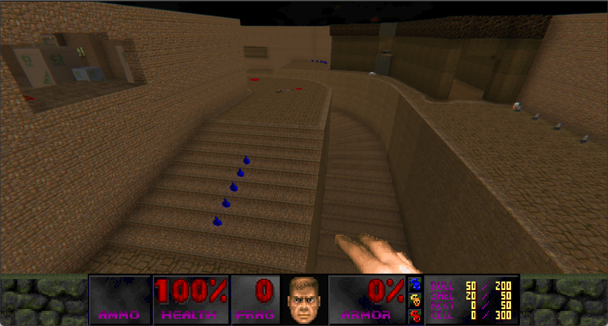
Mega4.wad
Mega 4 is 29 of the best Deathmatch levels, compiled just for you. Aren't you special. This 4 Megabyte WAD includes all new music, sound effects, and some cool new graphics. I compiled Mega4 back in 2006. It only has a handful of new maps added to it in that era. Most maps are from Dwango and Dweller.
Download mega4.wad
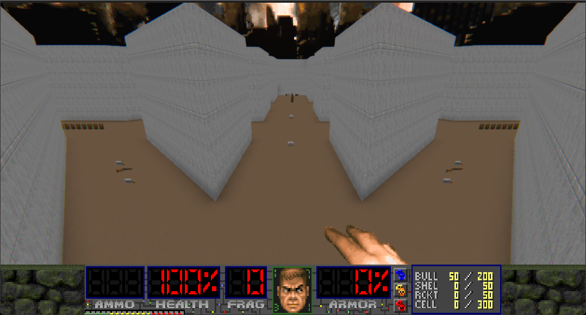
Mega3.wad
Mega 3 was compiled in the late 90s. Who compiled it is unknown and there was never a readme file for the wad. Either way, the megawad consists of 32 levels for Doom2 which are mostly Dwango and Dweller maps, and a few custom maps.
Download mega3.wad
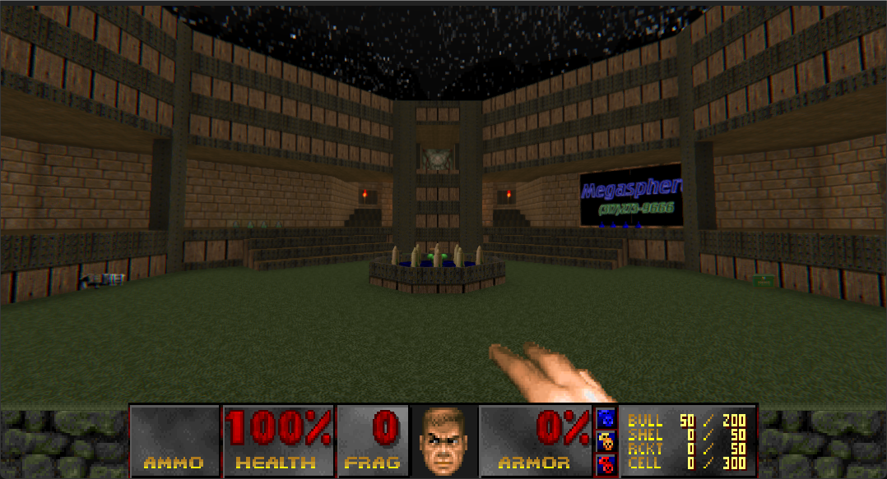
Mega2.wad
Megawad 2 is 30 of the best Deathmatch levels in the world. Some of which are also Deathtag levels. View the readme file for more info. Mega2 was compiled back in 1996 by Adam Pedersen and Martin Cox.
Download MEGA2.WAD